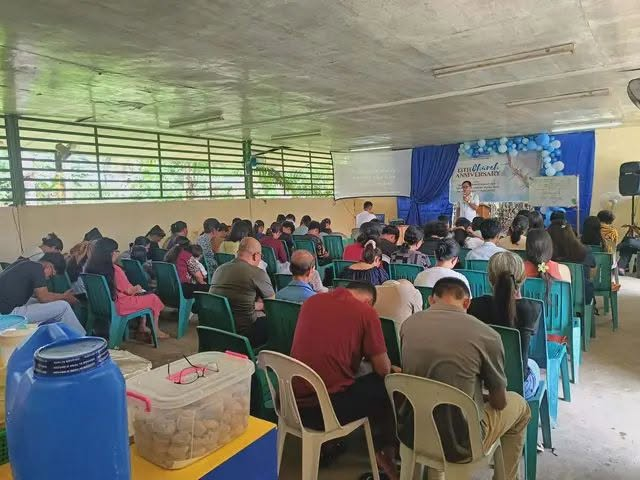

Sunday9:00 AM
Worship
Sunday Worship Service
Join us for worship, preaching, prayer, and fellowship.
Welcome to KJV Bible Christian Church and Ministries Inc., a church committed to preaching the Word of God, strengthening families, serving communities, and sharing the Gospel of Jesus Christ.
KJV Bible Christian Church and Ministries Inc. exists to honor the Lord Jesus Christ through faithful preaching, biblical discipleship, prayer, fellowship, and compassionate service.
Whether you are visiting for the first time, searching for a church family, or looking for spiritual encouragement, you are welcome here.
Faithful teaching and preaching from the Holy Scriptures.
A praying church depending on God’s grace and guidance.
A warm church family growing together in faith and love.
Serving communities and sharing the Gospel of Christ.
Leading the congregation in reverent, Christ-centered worship.
Teaching children biblical truth in a loving and joyful environment.
Helping young people grow in faith, character, and service.
Join us for worship, preaching, prayer, and fellowship.
A midweek gathering for prayer, encouragement, and devotion.
Grow deeper in God’s Word through guided Bible study.

A short encouragement about staying rooted in Scripture each day.

Recent ministry updates from community visitation and outreach work.

Why prayer must remain central in the life of the local church.
Visit a service, join a ministry, send a prayer request, or support the work of the ministry through your faithful giving.